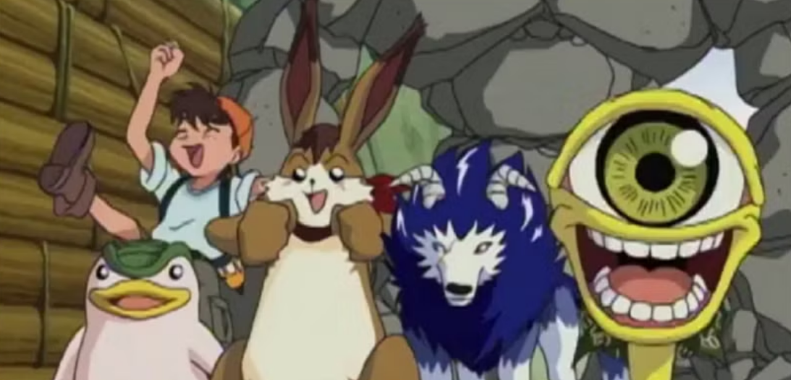
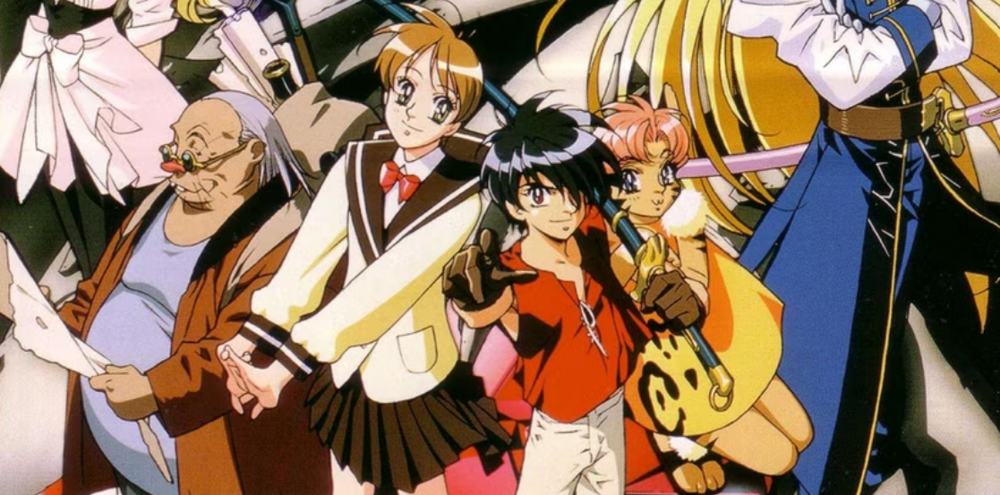
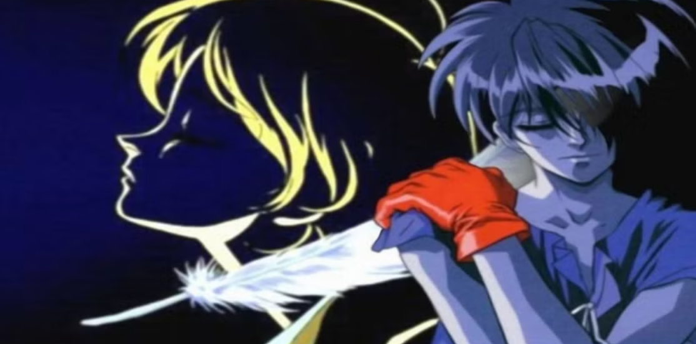

10:00
10:00
 10:30
10:30
 11:00
11:00
 11:30
11:30
 12:00
12:00
 12:30
12:30
 13:00
13:00
 13:30
13:30
 14:00
14:00
 14:30
14:30
 15:00
15:00
 15:30
15:30
 16:00
16:00
 16:30
16:30
 17:00
17:00
 17:30
18:00
18:30
17:30
18:00
18:30
 19:00
19:00
 19:30
20:00
20:30
21:00
21:30
22:00
22:30
19:30
20:00
20:30
21:00
21:30
22:00
22:30
 23:00
23:00
 23:30
23:30
Why Did Fox Kids Stop Airing Anime?

When Pokemon debuted on Kids WB it opened the floodgates for anime on network TV. Shortly before this Cartoon Network had success with various anime on their Toonami block, but Pokemon brought anime into the mainstream like no other show had before. It got to the point where every network was airing anime, form ABC Family to Nickelodeon. One of the few networks to have some massive success with anime was Fox Kids, and the surprise success with Digimon: Digital Monsters.
While this success would lead Fox Kids to double down on anime, a few short years later they would cease airing anime altogether. What’s more, anime that had been designed for the network would also not see the light of day. What was the moment (or moments) that caused Fox Kids to cease airing anime and exit all the co-productions they were already working on as well?
The Success of Digimon

While Fox Kids had aired the occasional anime before, the success of Pokemon made the network seek out a competitor for themselves. They found it in Digimon Adventure, which they brought over to the states as Digimon: Digital Monsters. The series was a huge success and even proved popular enough for Fox to greenlight a movie of the franchise: Digimon: The Movie (which was really three unrelated Digimon shorts edited into one film, but most kids were unaware of this fact).
After this success (and the continued success of Toonami and newest sensation Yu-Gi-Oh! from 4Kids Entertainment) Fox Kids decided to double down on anime. One of their first post-Digimon acquisitions was Monster Rancher, a similar themed monster show where the characters collect monsters through magic discs. Like Digimon the series was a hit (though to a lesser extent), and Fox Kids felt confident about acquiring more anime for the network. Unfortunately for them, these future shows would not be the same hits
Other Anime Series Have Limited Success

While Monster Rancher was enough of a hit for all three seasons to air on the network, other shows were not moving the needle. An action series known as Cybersix aired in 1999 with dismal returns. A time traveling show – Flint the Time Detective – came and went, and seems only as memorable in the fact that if you talk to the right person they might say “oh yeah…I think I DO remember that show?!” The anime Fox Kids was airing was not only faring poorly in the ratings; it was forgettable to boot.
A couple of years later the lukewarm reception of Metabots would be the final anime Fox Kids would air. This show did better than other series, but it still wasn’t enough to convince the network to keep anime on the air. In fact, despite this being the last anime the network would air, one particular embarrassment a year earlier would be the event that caused Fox Kids to rethink their relationship with anime.
Fox Kids Acquires The Vision of Escaflowne
While anime on Fox Kids was struggled to gain traction, anime on Cartoon Network’s Toonami was flourishing. Kids couldn’t get enough of Dragon Ball Z, Gundam Wing, and The Big O. Fox Kids executives had been offered several of these shows but turned them down, and they were starting to get resentful of Toonami’s success. Then one day, Toonami executive Jason DeMarco was asked by a journalist if a popular shows like Trigun or The Vision of Escaflowne would ever air on Toonami. DeMarco pointed out that Trigun couldn’t be aired because of all the gunplay in show, but mentioned that The Vision of Escaflowne was certainly a possibility.
This admission was enough for executives at Fox Kids to put in a bid and acquire the anime. If Toonami wanted it then chances are it was a hit in the making. And it very well might have been…had they realized what they just bought. You see, during this time period Saturday morning cartoons were still seen as a ‘boys only’ block. Cartoons with female protagonists just didn’t really exist on kids shows at the time, and The Vision of Escaflowne not only had a female protagonist, but it was equally focused on the drama and romantic lives of the characters as it was the sweeping, epic fantasy story.
While the executives were certain they could sell the fantasy and action aspects of the show, the romantic elements could be a problem. Worse, the first episode had minimal action and was more focused on things boys might not be interested in. Therefor, the decision was made to start with the second episode and include flashbacks to the first episode. The slower and more dramatic moments would also be trimmed, resulting in two more episodes worth of content being dropped (which would bring the total number of episodes down from 26 to 23). Finally, while some of Yoko Kanno's musical pieces would be kept, a new score to emphasize the action and excitement of the show. With their work done, The Vision of Escaflowne aired on Fox Kids in August 2000.
The Vision of Escaflowne Bombs

Unfortunately for the executives at Fox Kids, the changes and meddling resulted in a show that was far less grand than what it originally was supposed to be. By skipping most of the first episode viewers were more confused by what was going on and fans who were familiar with the show from the subtitled VHS days were quick to go online and denounce the dub as being a ‘hack job.’ While the viewership for the first episode was respectable, the series lost more and more viewers with each passing week. Soon it was reveled that Escaflowne (as it was re-titled) would cease airing on Fox Kids after episode 9, with NASCAR Racers set to take its place.
The fact that the ratings were poor enough to not even air the entire 23 episode series was bad enough, but things got worse. When the series went to DVD and VHS Bandai Entertainment released both the uncut and the Fox Kids edit of the series. The uncut version ended up being a huge success in the sales, while the Fox Kids version sold so poorly Bandai discontinued it after four volumes. The executives at Fox Kids not only had to deal with the fact that their show was a bomb, but that it had managed to become successful outside their tampering. Though Hollywood is supposed to be all business, sometimes things become personal, and this was one of those times.
Fox Kids Ceases Airing Anime

While Metabots was allowed to make it to air, Fox Kids took this as a sign that the network wasn’t cut out for anime. A planned Fox Kids edit of Magic Knight Rayearth was scrapped over fears that it would be unfavorably compared to the already on-the-market uncut version. Their other major project – Detective Conan – was also dropped due to the fact that much more editing would be required to make the series a kid-friendly show. After this, the executives decided not to pursue any more anime for the network. A year or two after the fact, Fox Kids would exist Saturday morning cartoons forever, selling the block to competitor 4Kids Entertainment, who would air anime like Sonic X and Shaman King on the renamed Fox Box (later 4Kids TV).
While some may blame Metabots as the final straw that broke the camel's back, the failure of The Vision of Escaflowne was so great that the executives took a public beating. It’s never good to have a show bomb on your network and find major success elsewhere. The DVD’s sold so well that Bandai even brought the movie – Escaflowne: The Movie – to theaters. It’s the kind of situation that puts a blemish on ones resume, so while Metabots may have been the last, the failure of The Vision of Escaflowne is what convinced Fox Kids to scale back on anime until it ceased to air on the network.
← Volver a artículos